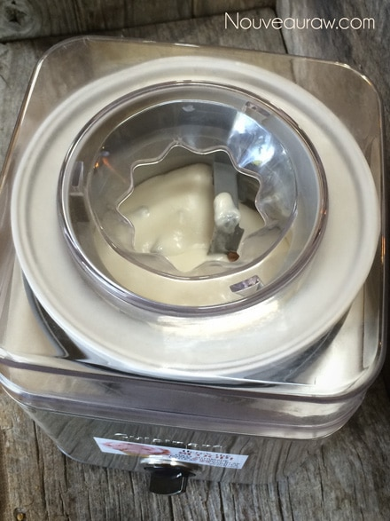

Macadamia Nut Ice Cream with Candied Pecans

~ raw, vegan, gluten-free ~
After making the Macadamia Nut Cream Base, I pulled it out of the fridge and sat the jar down on the table. I pulled up a chair and got eye-to-eye with the jar. I was staring it down, contemplating on just what masterpiece that I wanted to create.
The longer I stared, the more I realized that I wanted to showcase its true attributes; the silky smooth texture and the creamy white color. Both were just so amazing that I didn’t want to lose it by muddling it with other colors or overwhelming it with heavy textures. Within minutes it came to me… Ice cream!
Macadamia nuts all on their own have a hint of sweet butteriness. I wanted to elevate it, so I had to be careful as I selected the other ingredients to layer in the flavors. To the base, I added a little extra liquid to thin it out. To start building the flavor layers, I added raw agave nectar.
You could always use honey (not vegan), maple syrup (not raw), raw coconut nectar, yacon syrup, or even dates instead. But be aware that each different sweetener can and will change the taste and color of the finished ice cream.
A quick tip to remember when adding sweeteners to ice cream is that once cold, the apparent sweetness level drops. I tend to add a bit more than I think is needed to make up for this. If you don’t want to add more “sugars” to the recipe, you can add a little stevia to elevate the sweetness without affecting the glycemic index. It is also best to remove the ice cream from the freezer and place it on the counter to rest for about 15 minutes at room temperature before serving. Allowing it to “warm” up a bit helps bring out the sweet flavors.

To help elevate the richness of the cream base, I added coconut oil, vanilla, and a pinch of salt. It was divine. I almost just threw a straw into the blender jar, sat down on the couch, and called it a day, but somehow I resisted.
Instead, I chilled the batter for one hour in the freezer and then poured it into the ice cream machine. To add balance and interest to the creamy ice cream base, I made raw candied pecans. They are so simple to make and so worth the time.
For sixteen hours you will be able to indulge your senses in the luxurious scent of golden, buttery pecans touched with sweetness and warmed by a crackling fire, Excalibur dehydrator.
At the same time as making the candied pecans, I decided to make raw ice cream cones and bowls. Eating ice cream from a dish or bowl is always a treat. Somehow, though, the prospect of an ice cream cone makes the whole experience even more special. With the Fall season settling in, the whole combined flavor combination of a sweet, creamy macadamia ice cream with candied pecans mixed within, nestled a pumpkin spice flavored ice cream cone … how could one go wrong?! I am here to tell you that you can’t.
With my pumpkin spiced ice cream cone in hand, I pressed a large (shamefully large) scoop of ice cream onto it. I then lazily drizzled raw caramel sauce over the ice cream. And since my diet is starting tomorrow (tomorrow is always the best day to start a diet on), I threw all restraint out the window and sprinkled even MORE candied pecans on top.
In the end, I was able to capture the delicate attributes of the Macadamia Nut Cream base. With the joy of the first large lick, the silky smooth texture glided across my tongue, and every so often I have gifted a sweet, crunchy, candied pecan nugget. Soon I made my way to the crunchy pleasure where the ice cream and the cone met. The oaty, pumpkin-spiced cone was a welcoming treat, and as I made my way through the cone, I was left holding that slightly soggy liaison… you know that sweet spot… the tip of the cone where the melted ice cream puddles? It was just sitting there, bearing the last morsel of the magical substance.
Excuse me, I need a moment…
Ingredients:
1 quart
Ice cream base:
- 2 cups Macadamia Nut Cream Base
- 1/2 cup water
- 3/4 cup maple syrup
- 1 Tbsp vanilla extract
- 1 pinch Himalayan pink salt
- 1/2 cup coconut oil, melted
Candied pecans: yields 2 cups
- 2 cup raw pecans – soaked and towel-dried
- 1 cup liquid sweetener of choice
- 2 tsp ground cinnamon
- pinch ground nutmeg
Options:
- Raw Rich “Caramel Butterscotch” Sauce recipe, click (here)
- Oaty Pumpkin Spice Ice Cream Cone recipe, click (here)
Preparation:
Ice cream base:
- In a high-speed blender combine the nut cream base, water, maple syrup, vanilla, salt, and coconut oil. Blend until creamy smooth.
- Place the blender jar in the fridge or freezer for one hour to chill the batter before adding it to the ice cream machine. Then follow the manufactures instructions.
- Pour the ice cream into a glass, freezer-safe container and freeze.
Candied pecans:
- After soaking the pecans in water, drain and discard the soak water. Spread the pecans out on paper towels and blot dry. Place a bowl.
- Add the sweetener, cinnamon, and nutmeg to the bowl and stir well making sure all the pecans are coated.
- Pour the mixture on the teflex sheet that comes with the dehydrator. If you don’t have those, use parchment paper but not wax paper. Spread the nuts out.
- Dehydrate at 115 degrees (F) for roughly 16 hours. About halfway through (once dry enough), transfer the nuts to the mesh sheet to speed up the dry time.
- Allow to cool before removing them from the tray.
- Store extra in a sealed container.
Freezing Suggestions for Ice Cream:
-
-
Freeze in popsicle molds or 3 oz Dixie cups with a popsicle stick inserted.
-
-
Store the ice cream in the very back of the freezer, as far away from the door as possible. Every time you open your freezer door you let in warm air. Keeping ice cream way in the back and storing it beneath other frozen-sold items will help protect it from those steamy incursions.
-
Ice cream is full of fat, and even when frozen, fat has a way of soaking up flavors from the air around it—including those in your freezer. To keep your ice cream from taking on the odors, use a container with a tight-fitting lid. For extra security, place a layer of plastic wrap between your ice cream and the lid.
-
To soften in the refrigerator, transfer ice cream from the freezer to the refrigerator 20-30 minutes before using. Or let it stand at room temperature for 10-15 minutes.
-
Wish to make your own raw ice cream, wonder what machine I might recommend, and more? Click (
here) to check out the Reference Library
© AmieSue.com